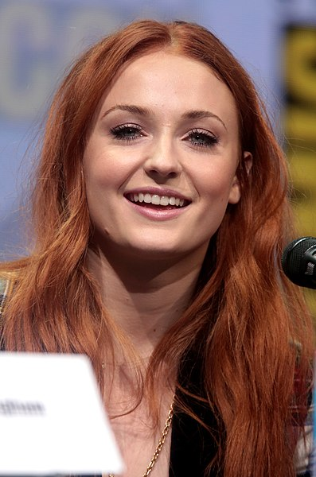

Game of Thrones (film series)
Game of Thrones is an American fantasy drama television series created by David Benioff and D. B. Weiss for HBO. It is an adaptation of A Song of Ice and Fire, a series of fantasy novels by George R. R. Martin, the first of which is A Game of Thrones. The show was shot in the United Kingdom, Canada, Croatia, Iceland, Malta, Morocco, and Spain. It premiered on HBO in the United States on April 17, 2011, and concluded on May 19, 2019, with 73 episodes broadcast over eight seasons.
Set on the fictional continents of Westeros and Essos, Game of Thrones has a large ensemble cast and follows several story arcs throughout the course of the show. The first major arc concerns the Iron Throne of the Seven Kingdoms of Westeros through a web of political conflicts among the noble families either vying to claim the throne or fighting for independence from whoever sits on it. A second focuses on the last descendant of the realm's deposed ruling dynasty, who has been exiled to Essos and is plotting to return and reclaim the throne. The third follows the Night's Watch, a military order defending the realm against threats from beyond Westeros's northern border.
Game of Thrones attracted a record viewership on HBO and has a broad, active, and international fan base. Critics have praised the series for its acting, complex characters, story, scope, and production values, although its frequent use of nudity and violence (including sexual violence) has been subject to criticism. The final season received significant critical backlash for its reduced length and creative decisions, with many considering it a disappointing conclusion. The series received 59 Primetime Emmy Awards, the most by a drama series, including Outstanding Drama Series in 2015, 2016, 2018 and 2019. Its other awards and nominations include three Hugo Awards for Best Dramatic Presentation, a Peabody Award, and five nominations for the Golden Globe Award for Best Television Series – Drama. Many critics and publications have named the show as one of the best television series of all time.
Game of Thrones is roughly based on the storylines of the A Song of Ice and Fire book series by George R. R. Martin, set in the fictional Seven Kingdoms of Westeros and the continent of Essos.[5][6] The series follows several simultaneous plot lines.[7] The first story arc follows a war of succession among competing claimants for control of the Iron Throne of the Seven Kingdoms, with other noble families fighting for independence from the throne. The second concerns the exiled scion's actions to reclaim the throne; the third chronicles the threat of the impending winter, as well as the legendary creatures and fierce peoples of the North
Emilia Clarke
Kit Harington

Sophie Turner
Maisie Williams
Nikolaj Coster-Waldau
Lena Headey
Peter Dinklage
REVIEWS
SaifOVGU 9 April 2020
I'm feeling so heartbroken to see everyone criticising my favourite show of all time. And yes of course that's because of the bad making of the season finale, I can totally understand that. After all these years hardwork, creating and developing each and every character from bottom to top, memories, emotions throughout the process all went to vain for one bad making. It's so painful to accept it for the audience who invested lots of time watching the show from the starting and then finishing it like this! It's a long long journey. I don't even remember the day I started watching it and since then I waited the next year to come for the new season. I can't say anything more. Only one last request, could you please delete the whole season 8 and make a new version of it? Please?
samxxx-671 25 May 2019
It was a master piece. It was written to the perfection. It was mesmerizing. It was gripping. It was so shocking that if someone is binge watching this show he/she will need a time-off in between to get their head around things and accept some messed up, yet mind blowing development. But yet, I cant hate it enough after final season. Its like you came to know that you were in love with the wrong one all along. It was like looking at a completely different person. It was like seeing your own dreams and expectations get destroyed. It was not a let down, it was a BETRAYAL!
TheLittleSongbird 9 November 2017
Was over-time on a gradual binge of watching 'Game of Thrones' from the first episode (gradual because of being so busy), having heard nothing but amazing things about it from friends, family and IMDb reviewers. Plus with such a great cast of talent and a brilliant book series, how could it possibly go wrong? The good news is that 'Game of Thrones' didn't go wrong. Quite the opposite. Not only is it a rare television show that does its original source material justice and treats it with respect but it is on its own merits one of the finest, most addictive and consistently compelling shows in recent years.